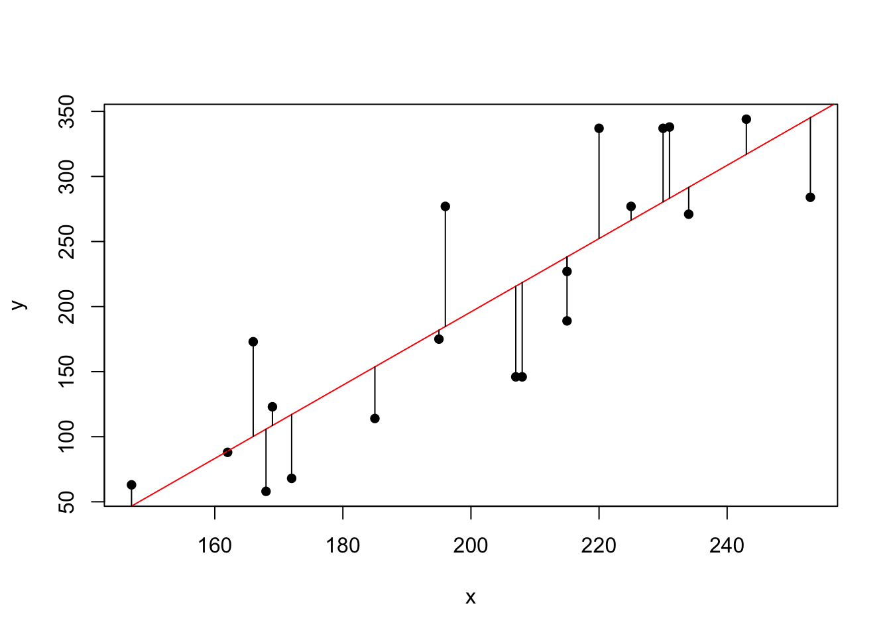
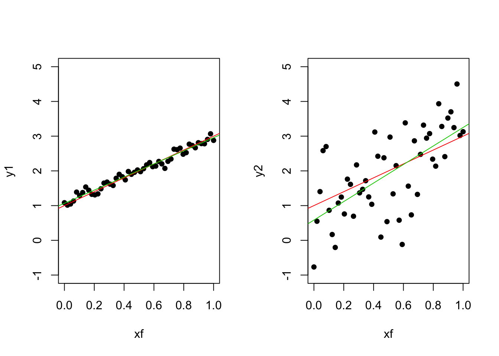
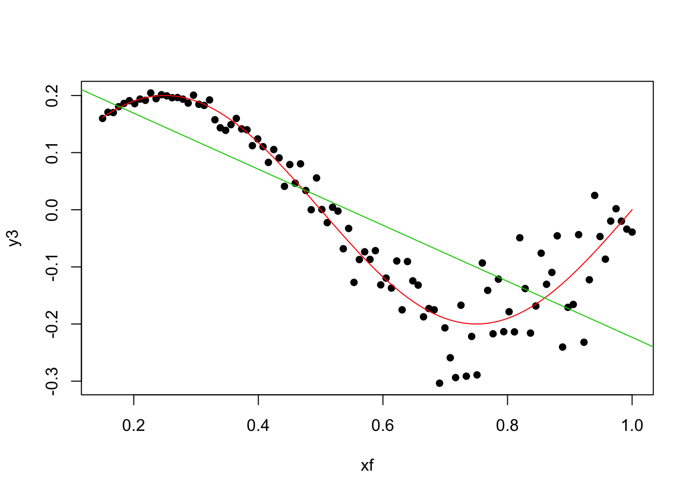

Chapter 1 Simple linear regression
1.1 Motivation; model formulation; examples; applications; assumptions
1.1.1 Motivating example
Suppose we have a production line where we measured the time (in minutes) required to produce a number of solicited items. There are two random variables: y = “time required to produce an order” and x = “number of items in the order”. We want to explain/predict y from x from a linear model.
# Production time
y <- c(175, 189, 344, 88, 114, 338, 271, 173, 284, 277, 337, 58, 146, 277, 123, 227, 63, 337, 146, 68)
# Number of units in the order
x <- c(195, 215, 243, 162, 185, 231, 234, 166, 253, 196, 220, 168, 207, 225, 169, 215, 147, 230, 208, 172)
# Data scatterplot (pch = 16 for filled points)
plot(y ~ x, pch = 16)
1.1.2 The lm function
The linear fit in R is done by the lm function and the formula y ~ x, used to denote that we are interested in regressing y over x.
# Fit a linear model y = beta0 + beta1 * x
reg <- lm(y ~ x)
# The result is a list with several objects
names(reg)## [1] "coefficients" "residuals" "effects" "rank"
## [5] "fitted.values" "assign" "qr" "df.residual"
## [9] "xlevels" "call" "terms" "model"# The fitted coefficients beta0 (intercept) and beta1 (slope)
reg$coefficients## (Intercept) x
## -367.360643 2.816682# The regression line with the minimized distances
plot(y ~ x, pch = 16)
abline(reg, col = 2)
segments(x0 = x, y0 = y, x1 = x, y1 = reg$fitted.values)
1.1.3 The least squares estimate
We can check and visualize that reg$coefficients indeed contains the least squares estimates and that they minimize the Residual Sum of Squares (RSS).
# Create the design matrix
X <- cbind(1, x)
# The analytical solution
betahat <- solve(t(X) %*% X) %*% t(X) %*% y
betahat## [,1]
## -367.360643
## x 2.816682# Minimal RSS
sum((y - X %*% betahat)^2)## [1] 51658.57You can try to get a better RSS. Good luck! :)
1.1.4 Summary of the model
The summary function applied to a lm object gives the fitted coefficients and its significances (“Pr(>|t|)”), the \(R^2\) (“Multiple R-squared”) and the fitted error variance (“Residual standard error”).
# Summary of the fit
summary(reg)##
## Call:
## lm(formula = y ~ x)
##
## Residuals:
## Min 1Q Median 3Q Max
## -72.509 -48.159 -3.917 33.857 92.291
##
## Coefficients:
## Estimate Std. Error t value Pr(>|t|)
## (Intercept) -367.3606 82.4122 -4.458 0.000304 ***
## x 2.8167 0.4035 6.980 1.61e-06 ***
## ---
## Signif. codes: 0 '***' 0.001 '**' 0.01 '*' 0.05 '.' 0.1 ' ' 1
##
## Residual standard error: 53.57 on 18 degrees of freedom
## Multiple R-squared: 0.7302, Adjusted R-squared: 0.7152
## F-statistic: 48.72 on 1 and 18 DF, p-value: 1.615e-061.1.5 Prediction
Prediction of a new observation can be done via the function predict, which also provides conficence intervals. The newdata argument of predict needs a data.frame.
# Point in which we want a prediction for y
newx <- data.frame(x = 200)
# Prediction with 95% confidence interval
predict(reg, newdata = newx, interval = "prediction", level = 0.95)## fit lwr upr
## 1 195.9758 80.63344 311.3182# The same prediction
reg$coefficients %*% c(1, 200)## [,1]
## [1,] 195.97581.1.6 Some words of caution with \(R^2\)
\(R^2\) does not measure the correctness of a linear model but the usefulness assuming the model is correct.
# Fixed design
xf <- seq(0, 1, l = 50)
# Errors with different variance
set.seed(123456)
eps1 <- rnorm(50, sd = 0.1)
eps2 <- rnorm(50, sd = 1)
# Responses generated following a linear model
y1 <- 1 + 2 * xf + eps1
y2 <- 1 + 2 * xf + eps2
# Fits
reg1 <- lm(y1 ~ xf)
reg2 <- lm(y2 ~ xf)
# R^2 depends on the
summary(reg1)##
## Call:
## lm(formula = y1 ~ xf)
##
## Residuals:
## Min 1Q Median 3Q Max
## -0.26738 -0.08220 -0.00143 0.06930 0.19892
##
## Coefficients:
## Estimate Std. Error t value Pr(>|t|)
## (Intercept) 1.06719 0.02781 38.37 <2e-16 ***
## xf 1.88910 0.04793 39.42 <2e-16 ***
## ---
## Signif. codes: 0 '***' 0.001 '**' 0.01 '*' 0.05 '.' 0.1 ' ' 1
##
## Residual standard error: 0.09981 on 48 degrees of freedom
## Multiple R-squared: 0.97, Adjusted R-squared: 0.9694
## F-statistic: 1554 on 1 and 48 DF, p-value: < 2.2e-16summary(reg2)##
## Call:
## lm(formula = y2 ~ xf)
##
## Residuals:
## Min 1Q Median 3Q Max
## -2.27986 -0.59235 0.03505 0.57115 1.89983
##
## Coefficients:
## Estimate Std. Error t value Pr(>|t|)
## (Intercept) 0.5830 0.2595 2.247 0.0293 *
## xf 2.6665 0.4472 5.963 2.86e-07 ***
## ---
## Signif. codes: 0 '***' 0.001 '**' 0.01 '*' 0.05 '.' 0.1 ' ' 1
##
## Residual standard error: 0.9313 on 48 degrees of freedom
## Multiple R-squared: 0.4255, Adjusted R-squared: 0.4136
## F-statistic: 35.55 on 1 and 48 DF, p-value: 2.858e-07# Plot
par(mfrow = c(1, 2))
plot(y1 ~ xf, pch = 16, ylim = c(-1, 5))
abline(a = 1, b = 2, col = 2)
abline(a = reg1$coefficients[1], b = reg1$coefficients[2], col = 3)
plot(y2 ~ xf, pch = 16, ylim = c(-1, 5))
abline(a = 1, b = 2, col = 2)
abline(a = reg2$coefficients[1], b = reg2$coefficients[2], col = 3)
A large \(R^2\) means nothing if the assumptions of the model do not hold.
# Create data that:
# 1) does NOT follow a linear model
# 2) the error is heteroskedastic
xf <- seq(0.15, 1, l = 100)
y3 <- 0.2 * sin(2 * pi * xf) + rnorm(n = 100, sd = 0.1 * xf^2)
# Great R^2!?
reg3 <- lm(y3 ~ xf)
summary(reg3)##
## Call:
## lm(formula = y3 ~ xf)
##
## Residuals:
## Min 1Q Median 3Q Max
## -0.231885 -0.070384 0.006934 0.056374 0.218962
##
## Coefficients:
## Estimate Std. Error t value Pr(>|t|)
## (Intercept) 0.26718 0.02343 11.40 <2e-16 ***
## xf -0.49051 0.03742 -13.11 <2e-16 ***
## ---
## Signif. codes: 0 '***' 0.001 '**' 0.01 '*' 0.05 '.' 0.1 ' ' 1
##
## Residual standard error: 0.09274 on 98 degrees of freedom
## Multiple R-squared: 0.6368, Adjusted R-squared: 0.6331
## F-statistic: 171.8 on 1 and 98 DF, p-value: < 2.2e-16# But predicting is obviously problematic
plot(y3 ~ xf, pch = 16)
lines(0.2 * sin(2 * pi * xf) ~ xf, col = 2)
abline(reg3, col = 3) Simple linear regression
\[Y_i=a+bX_i+\varepsilon,\quad i=1,\ldots,n.\]
1.2 Estimation of model parameters; least squares; inference for model parameters; forecasting.
1.3 Assessing model fit; ANOVA; model validation; model diagnostics; handling nonlinear relationships.
You can label chapter and section titles using {#label} after them, e.g., we can reference Chapter ??. If you do not manually label them, there will be automatic labels anyway, e.g., Chapter ??.
Figures and tables with captions will be placed in figure and table environments, respectively.
par(mar = c(4, 4, .1, .1))
plot(pressure, type = 'b', pch = 19)
Figure 1.1: Here is a nice figure!
Reference a figure by its code chunk label with the fig: prefix, e.g., see Figure 1.1. Similarly, you can reference tables generated from knitr::kable(), e.g., see Table 1.1.
knitr::kable(
head(iris, 20), caption = 'Here is a nice table!',
booktabs = TRUE
)| Sepal.Length | Sepal.Width | Petal.Length | Petal.Width | Species |
|---|---|---|---|---|
| 5.1 | 3.5 | 1.4 | 0.2 | setosa |
| 4.9 | 3.0 | 1.4 | 0.2 | setosa |
| 4.7 | 3.2 | 1.3 | 0.2 | setosa |
| 4.6 | 3.1 | 1.5 | 0.2 | setosa |
| 5.0 | 3.6 | 1.4 | 0.2 | setosa |
| 5.4 | 3.9 | 1.7 | 0.4 | setosa |
| 4.6 | 3.4 | 1.4 | 0.3 | setosa |
| 5.0 | 3.4 | 1.5 | 0.2 | setosa |
| 4.4 | 2.9 | 1.4 | 0.2 | setosa |
| 4.9 | 3.1 | 1.5 | 0.1 | setosa |
| 5.4 | 3.7 | 1.5 | 0.2 | setosa |
| 4.8 | 3.4 | 1.6 | 0.2 | setosa |
| 4.8 | 3.0 | 1.4 | 0.1 | setosa |
| 4.3 | 3.0 | 1.1 | 0.1 | setosa |
| 5.8 | 4.0 | 1.2 | 0.2 | setosa |
| 5.7 | 4.4 | 1.5 | 0.4 | setosa |
| 5.4 | 3.9 | 1.3 | 0.4 | setosa |
| 5.1 | 3.5 | 1.4 | 0.3 | setosa |
| 5.7 | 3.8 | 1.7 | 0.3 | setosa |
| 5.1 | 3.8 | 1.5 | 0.3 | setosa |
You can write citations, too. For example, we are using the bookdown package (Xie 2016) in this sample book, which was built on top of R Markdown and knitr (Xie 2015).
This is a sample book written in Markdown. You can use anything that Pandoc’s Markdown supports, e.g., a math equation \(a^2 + b^2 = c^2\).
For now, you have to install the development versions of bookdown from Github:
devtools::install_github("rstudio/bookdown")Remember each Rmd file contains one and only one chapter, and a chapter is defined by the first-level heading #.
To compile this example to PDF, you need to install XeLaTeX.
Xie, Yihui. 2015. Dynamic Documents with R and Knitr. 2nd ed. Boca Raton, Florida: Chapman; Hall/CRC. http://yihui.name/knitr/.
———. 2016. Bookdown: Authoring Books with R Markdown. https://github.com/rstudio/bookdown.
References
Xie, Yihui. 2016. Bookdown: Authoring Books with R Markdown. https://github.com/rstudio/bookdown.
Xie, Yihui. 2015. Dynamic Documents with R and Knitr. 2nd ed. Boca Raton, Florida: Chapman; Hall/CRC. http://yihui.name/knitr/.